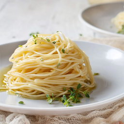

Espaguete ao Alho e Óleo

Ingredientes:
- 200g de espaguete
- 4 dentes de alho
- 50ml de azeite
- Sal e pimenta a gosto
- Queijo parmesão ralado (opcional)
Modo de Preparo:
- Cozinhe o espaguete conforme as instruções da embalagem.
- Em uma frigideira, aqueça o azeite e doure o alho.
- Misture o espaguete ao alho e óleo.
- Tempere com sal, pimenta e queijo parmesão a gosto.
Lasanha Bolonhesa
Ingredientes:
- 500g de massa para lasanha
- 500g de carne moída
- 1 cebola picada
- 2 dentes de alho picados
- 700ml de molho de tomate
- 500g de queijo muçarela fatiado
- 100g de queijo parmesão ralado
- Sal, pimenta e orégano a gosto
Modo de Preparo:
- Cozinhe a carne moída com a cebola e o alho.
- Adicione o molho de tomate e tempere a gosto.
- Monte a lasanha alternando camadas de massa, molho e queijo.
- Leve ao forno pré-aquecido a 180°C por 40 minutos.
Ravioli de Ricota e Espinafre
Ingredientes:
- 300g de massa de ravioli
- 200g de ricota
- 100g de espinafre picado
- 2 colheres de sopa de azeite
- Sal e pimenta a gosto
- Molho de tomate (para servir)
Modo de Preparo:
- Misture a ricota com o espinafre e tempere.
- Recheie os raviolis com a mistura de ricota e espinafre.
- Cozinhe os raviolis em água fervente.
- Sirva com molho de tomate.